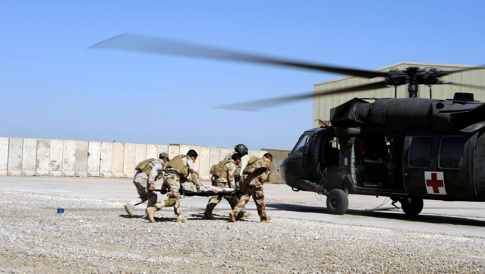

La ou le médecin urgentiste gère des situations médicales d'urgence
Elle ou il examine le patient, évalue la gravité de chaque cas et pose un diagnostic.
Le cas échéant, il faut restaurer ou stabiliser les fonctions vitales, exercer des gestes techniques (intubation, réduction de fracture, échographie, drainage...), soulager la douleur et décider des soins à apporter.
L'urgentiste suit plusieurs patients qui peuvent rester un temps en observation dans son service
Les médecins urgentistes doivent être prêts à gérer tous les cas : brûlure, cassure, détresse respiratoire ou psychologique... Pour cela, ils interrogent le patient et/ou sa famille, rassurent et orientent vers le bon service une fois les premiers soins apportés. Ils passent du temps au téléphone pour trouver un service qui pourra accueillir leurs patients, s'attellent au travail administratif quotidien, participent à des réunions et à des formations, etc.
Certains urgentistes se rendent auprès des malades ou blessés avec le Smur (service mobile d'urgence et de réanimation) lors d'accidents de la route, de malaise cardiaque ou d'AVC (accident vasculaire cérébral) à domicile, etc. Ils peuvent aussi exercer dans une zone de conflits, pays en voie de développement, etc.
